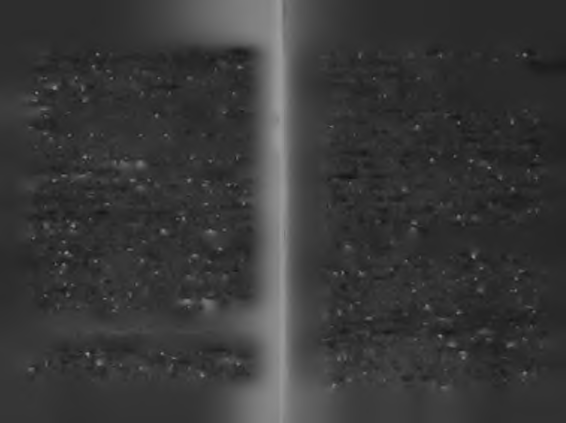

P HAYATI NASIL Y A P M A L I ?
Hayata geldiğimiz yer ile hayatta gelmek istediğimiz yer arasında geçiyor ömrümüz.
'I
Zorluklardan seçmeli hayatlar yaşıyoruz. İsteklerimiz imkân4
larımızla orantılı değil. Seçtiğimiz her şey için, başka bir şeylerden vazgeçmemiz gerekiyor. Sevdiğimizi seçtikçe mutlu, seçtiğimizi sevdikçe huzurlu oluyoruz.
En çok istediğimiz şeyler hiç istemediklerimizle iç içe geçmiş
halde çıkıyor karşımıza. İstediğimiz birçok şeye ulaşmak için istemediğimiz birçok şeye katlanmak zorunda kalıyoruz. Sevmediklerimizi sevdiklerimize bedel koyuyor hayat.
Hayatımızı şekillendiren bazı şeyler elimizde, bazıları de
ğil. Hayat oyununun bazı kuralları belli, bazıları değil. Bazılarımız şartlara şekil veriyor, bazılarımıza şartlar şekil veriyor. Bazılarımız dünya rekoru kırmak için çalışıyor, bazılarımız
"dünya dekoru" niyetine yaşıyor.
İşimiz ile içimiz arasında geçi(ni)p gidiyoruz. Toprak üstünde farklı sınıflarda yaşayıp, toprak altmda eşitleniyoruz.
"Avuçlarımız sımsıkı halde dünyaya gelip, ellerimiz açık şekilde dünyadan gidiyoruz."1
3
2
miza bir filin dört ayağıyla bir basket topu üzerinde durabil
Y a ş ım ız büyüdükçe h a y a lle rim iz k ü ç ü lü y o r ,
mesi kadar zor geliyor?
h a y a lle rim iz küçüldükçe k ıs k a n ç lık la rım ız h ü y ü y o r.
Bir düşünün, şu yaşlı gezegende bugüne kadar kaç insan
yaşadı? Bazı tarihçilere göre 100 milyar kişi!
Hem yaratıcı, hem yıkıcı taraflarımız var. Kendimizi bir
Bunların ne kadarı başarılı olmayı istedi? Muhtemelen,
yandan inşa, bir yandan tahrip ediyoruz. Cesaret ile korku,
yüzde doksanı!
bilgelik ile cehalet, zarafet ile zorbalık, iyilik ile kötülük, şef
Ne kadarı bunu başarabildi? Ne kadarı hayal ettiğini hakat ile şiddet aynı anda içimizde yaşıyor, çatışıyor, bize egeyatında görebildi? Belki yüzde onu, belki yirmisi! Yapabilenmen olmaya çalışıyor. İçimizdeki dengesizliklere rağmen ler nasıl yapabildi? Yapamayanlar neden yapamadı?
dengeli bir hayat kurmaya çalışıyoruz.
35 yaşma kadar Makedonya'dan Hindistan'a her yeri fet
Kendin yap mobilyalar gibi hayatımız. Evine aldığı moheden Büyük İskender'i, Korsika'nın bir köyünden çıkıp Avdüler mobilyayı kendi başına monte etmeye çalışanlar gibi rupa'yı yerinden oynatan Napolyon'u, babasına çocukken
yaşıyoruz. Biraz kılavuza bakıyoruz, biraz birbirine uyan malze
verdiği sözü tutmak için 50 bin askerle Alp dağlarındaki ka
melere. Elimiz alıştıkça aklımıza güveniyoruz, kafamız karıştıkça
yaları eriterek aşıp Roma'ya saldıran Kartacalı Hanibal'i, 21
kılavuzlara. Hepimizin derdi, parçaları doğru birleştirip, anyaşında gemileri karadan yüzdürüp İstanbul'u fetheden "Falamlı ve işe yarar bir şey ortaya çıkarmak.
tih" Sultan Mehmet'i bu kadar büyük başarıya götüren iç
Beynimiz hayat dekoderi gibi çalışıp olan biteni çözmeye
güçler nelerdi acaba?
çalışıyor. Acaba tersten gelseydik daha iyi mi çözerdik haya
Az değil, 100 milyar insan yürüdü bu dünyanın üzerintı? Ölümden doğsaydık hayata. Önce yaşlılığı yaşasaydık.
Sonra orta yaşı. Sonra gençliği. Sonra çocukluğu. Sonra da
de. Kimi iz sürdü, kimi iz bıraktı. Geldiler, kendilerince yabebek olup doğumla ölseydik. Neden olamasın ki? Şimdiki şadılar ve gittiler. Bazıları kum tanesi kadar önemsenmedi
gibi önce yaşayıp sonra anlamazdık hayatı, önce anlayıp sonra ya
ler, bazıları adlarına kumdan anıtlar diktirdiler. Bazıları sa
şardık. Acaba hangisi daha iyi olurdu?2
dece geçinme derdindeydi, bazıları ise ismini tarihe geçirme. Tarih, ne görkemli bir insan galerisi. Lif damlalık özet: Neden h a ş a rılı olm ak b a zıla rım ıza bir iilin
Kan, ter ve gözyaşı!
basket topu üze rinde d ö rt a ya ğ ıyla durm ası k a d a r z o r ge liyo r?
T a r ih i ya p a n la r ve ta rihin m a lze m e le ri!
Hepimiz kendimiz için, kendimize göre, kendimiz tarafından
tasarlanmış bir hayat yaşamak istiyoruz. Birçoğumuz bunu
Mark Twain'e göre insanlar ikiye ayrılır: Tarihi yapanlar ve
tarihin malzemeleri!
başaramıyoruz. Neden başarılı bir hayat yaşamak bazıları-
4
5
Tarihi yapanların öykülerini biliyoruz, ya "malzemelerin"
özelliği, ilişkiler, fiziksel yapı gibi çok sayıda değişkene bağlıdır ama
öyküleri? Tozu dumana katanları biliyoruz ya tozu dumanı
yine de onun tüm bildiğini bilerek, onun kadar başarılı olamasak
yutanların hikâyesi? Baş aktörleri biliyoruz, ya fondakiler?
da, şu andaki halimizden daha iyi bir yerde olabilirdik, diye düşün
"Büyük" İskender'e karşı savaşan Pers ordusunun en ön
meden edemiyorum!
deki o "küçük" askerinin öyküsü neydi acaba?
İnsanlık tarihi beş bin yıldır bu sırrın peşinde: "Başarılı in
"Dünya tarihi büyük adamların biyografilerinden ibarettir,"
sanların bildiği, diğer insanların bilmediği nedir?" Neden hayatdiyen Thomas Carlyle'e inat, bugüne kadar yaşamış tüm "sıta bazıları başarılı oluyor, bazıları başarısız? Neden aynı aileradan" insanlar içinden bir kişiyle röportaj yapma imkânınız nin iki çocuğundan biri başarılı oluyor, diğeri başarısız? Neolsaydı, kimi seçerdiniz?
den aynı şartlarda yaşayan iki insandan biri başarılı oluyor,
İlk atom bombasının düştüğü yere en yakın kişi her kimse,
diğer başarısız? Sözün kısası; insanları başarılı ya da başarıo olabilir mi mesela?
sız yapan nedir?
Belki elinde market poşetiyle alışverişten dönen biriydi,
Daha çok başarılı olmak için neye ihtiyacımız var? Tutku?
belki de o an akşam evde yemekte ne olduğunu düşünüyor
Teknik? Cesaret? Bilgelik? Zarafet? Yetenek? Kendi ayakları
du ve aniden kafasına atom bombası düştü!
üzerinde durabilmek ve kendi kanatlarıyla uçabilmek için insana ne
Sıradışı sonuçları olan şeylerin sıradan bir şekilde geliş
gerek? Bir insan aklı ve yüreği ile kendi gücüne dayanarak
mesi ne ürkütücüdür.
nasıl ve nereye kadar ilerleyebilir?
Çin atasözlerinden Hint edebiyatına, Antik Çağ Yunan
Ac a ba ta rih te k i en biiyiik b a ş a r ıy ı kim g e rç e k le ş tir d i?
felsefesinden modern Amerikan iş terminolojisine, Anadolu
tasavvuf kültüründen Orta Asya Türk geleneklerine kadar
Resmi tarihe geçmese de, tarihte geçen en büyük başarı
geniş bir yelpazede bu soruların cevabını aramaya var mısı
öyküsü neydi acaba?
nız?
O en büyük başarıyı gerçekleştiren kimdi?
Onun başarıya dair bildiği, diğer insanların bilmediği
neydi? Onun "fabrika ayarlarında" olup da diğer insanlarda
olmayan neydi? Onun gündelik hayatta yapıp da diğer insanların yapmadıkları neydi? Onun başarı hakkında inandı
ğı, diğer insanların inanmadığı neydi? Onun ailesinde gördüğü, diğer insanların görmediği neydi?
Onun bildiğini bilerek onun yapabildiğini yapabileceğimizi dü
şünmüyorum; başarı bilginin ötesinde, yetenek, şartlar, karakter
7
için Atina gibi çevredeki şehirlerden toplanan 7 kadın 7 erkek kurban olarak labirente atılmaktadır.
Zamanla Atina halkı bu duruma isyan eder ama Girit kralına karşı bir şey yapmazlar. Halk hazır olunca, bir gün halk kahramanı da çıkagelir.
Atinalı üstün bir savaşçı olan Thesseus, kurban adayı olarak Girit'e gider. Labirentte canavarla savaşıp onu öldürmek ister ama labirentin karışıklığında yönünü şaşırır. Daidalos'a
YAŞAMAK İÇİN YÜKSELMEK Mİ, YÜKSELMEK
başvurur. Daidalos da bir iplik yumağını alıp, labirentin giri
şine bağlayarak yürürse, kaybolmadan başladığı yere geri
İÇİN YAŞAMAK MI?
dönebileceğini söyler.
Thesseus labirente girer, yönünü kaybetmeden ilerler, sonunda savaşarak canavarı öldürür. Canavarı öldürünce kah
Antik Çağ mitolojisindeki en sevdiğim karakterlerden biraman olur. Bu arada kralın kızı da ona âşık olur! Thesseus ri İkarus'tur!
kralın kızını da alarak, Girit'ten gider. Kral olanları öğrenin
Ege zeytiniyle beslenmiş insanların hayalinden doğmuşce çok kızar.
tur. İnsanın limitlerini zorlaması üzerine tutkulu bir efsanedir.
" N e çok alçaktan uç , ne çnk y ü k s e k te n !"
İkarus'un babası Daidalos, çok başarılı bir mucit ve mimardır. Kıskanç insanların kışkırtması sonucu, kralı tarafın
Kral, Daidalos'un Thesseus'a labirentin sırrını açtığını düdan sürgün edilince, Girit Adası'na gider.
şünüp, onu cezalandırmak için oğlu İkarus'la beraber kendi
Geldiğini öğrenen Girit Kralı Minos onu hemen sarayına
yaptığı labirente kapatır.
davet eder. Kralın başı kendi çocuğu olan bir canavarla dert
Becerikli mimar nasıl kurtulacaklarını düşünmeye başlar.
tedir. Karısı tanrılar tarafından cezalandırılıp yarı boğa yarı
O kadar iyi bir labirent yapmıştır ki, kendisi bile içinden çıinsan bir çocuk doğurmuştur. Kral, Daidalos'tan Minotaurus kamamaktadır!
adlı bu insan yiyen canavarı hapsedecek bir yer yapmasını
Sonunda başka bir fikir bulur. Kuşların bıraktığı tüyleri
ister.
toplayarak, balmumuyla birleştirip kendine ve oğluna birer
Daidalos üstün zekâsıyla içinden bir türlü çıkılamayan bir
kanat yapar. Kanatları sırtlarına yapıştırıp kollarına bağlarlabirent (labyrnthos) yapar ve canavar oraya konur. Canavar lar.

Daidalos oğlu İkarus'a, kanatlar balmumundan yapıldığı için
Daidalos'lar, "hayal tutkunu" İkarus'lar ve lider olmak için
çok alçaktan da çok yüksekten de uçmamasını tembih eder. Çok aldoğmuş Thesseus'lar.
çaktan uçarsa nemin kanatları ağırlaştırarak uçmasını engel
Şimdi bunları biraz yakından tanıyalım.
leyeceğini, çok yüksekten uçarsa güneşin balmumunu eritip
1. Labirent şaşkını "kurban'Tar.
kanatlarını yakacağını söyler.
Ona sıkı sıkıya tembih eder: "Ne çok alçaktan uç, ne çok yük
Hayatları alçak sürünme halinde geçer. Kafaları karışık hal
sekten!"
de hayatın labirentlerinde kaybolmuş; ya kendine kanat ya
Genç İkarus kanatlarını takar ve kendisini hava boşluğupıp uçmayı düşünememiş ya bunu düşünmüş ama becere-na bırakıp uçmaya başlar.
memiş ya da kanatlarına güvenip uçmaya cesaret edememiş
Giritliler şaşkın bir şekilde aşağıdan onları seyrederken,
lerdir. İçlerinde hem yükselme tutkusu hem yükseklik korkusu
onlar özgürlüğe uçarlar.
bulunur. Bir zamanlar kendi aralarında yaşamış birilerini
Takma kanatlarla uçarak yükseldikçe İkarus'a bir şeyler
gökyüzünde gördüklerinde, onunla eskiden bir arada yaşaolmaya başlar. Özgürlüğün, uçmanın ve kendi kanatlarıyla mış olmakla övünmek teselli ikramiyeleridir. Toprak gibidiryükselmenin keyfini aldıkça, kendinden geçer İkarus. Babası
ler, dünyanın yükünü onlar çekerler. Biraz ayak altı bir hayatnın tüm söylediklerini unutup, gözünü güneşe diker. Ona dokun
ları vardır. Bu yüzden içleri sıkıntı ve ders doludur. En kalamak istercesine, tüm gücüyle güneşe doğru yükselmeye başbalık gruptur. Güçlerini sayılarının çokluğundan alırlar.
lar. Tüm sınırları unutup yükseldikçe yükselir.
2. Daidalos(çu)lar.
Güneşe yaklaştıkça, İkarus'un balmumundan yapılmış kanatla
Bunlar mantıklı, meslekli, orta halli insanlardır. Uçabilme-
rı erimeye başlar. İkarus durmak bir yana daha da yükselir. Soyi severler ama fazla yükselmekten korkarlar. Her şeyde nunda kanatları eriyip kopunca İkarus Ege Denizi'ne düşer,
"denge" arar, iyi olan şeylerin dahi fazlasından uzak durursularda kaybolur. Güneşe ulaşma tutkusu hayatına mal ollar. Sahip olduklarını kaybetmekten çok korktuklarından muştur. İkarus güneşe ulaşamamıştır ama sınırsızca yükselfazla risk alamaz, kaybetme ihtimali olan oyunu pek oyname tutkusuna sahip insanların ikonu olmuştur!
mak istemezler. Küçük ve orta boy başarıların insanıdırlar. İşlerinde iyi olduklarından başarısız olmazlar ama efsanevi işler de ba
K u r b a n la r , tu tk u lu la r, lid e rle r ve m üh e ndisle r!
şaramazlar. Çünkü efsane olmak için gereken sıradışı cesareti
gösteremezler. Sahip oldukları orta sınıf dengeciliği ve mantık
Bu mitolojik öykü üzerinden başarı yolunda yürüyen inlılık kaygısı onları sınırlandırır. Orta karar hayatlar yaşarlar.
sanları dört gruba ayırmayı severim: Labirentte yolunu kay
Dengeli ve düzenli olan, ideal olandır onlar için. Belirsizlik
bedip canavarlara "kurban" olanlar, "mantık mühendisi"
ve risk toleransları düşüktür. Sayıları labirentte kalanlardan
11